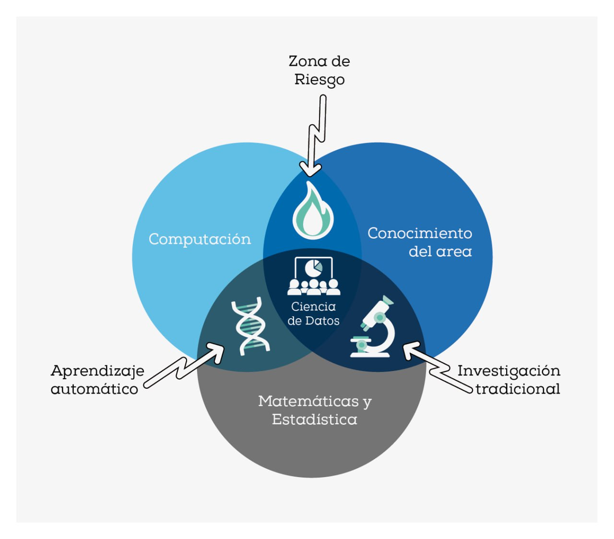
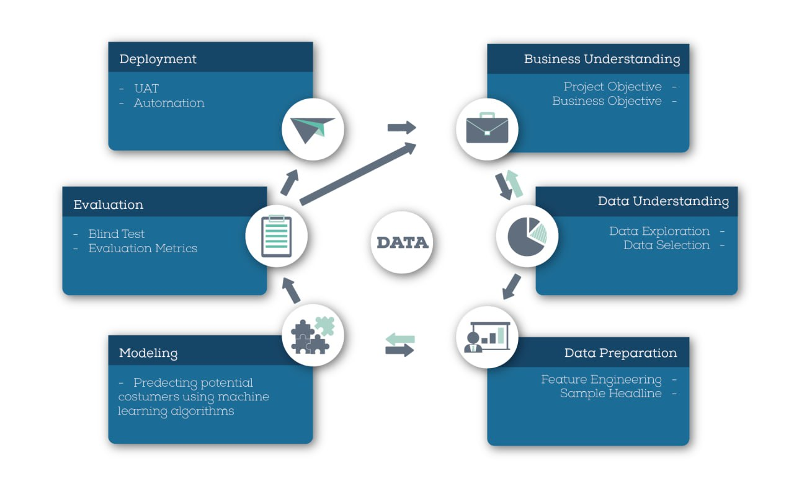
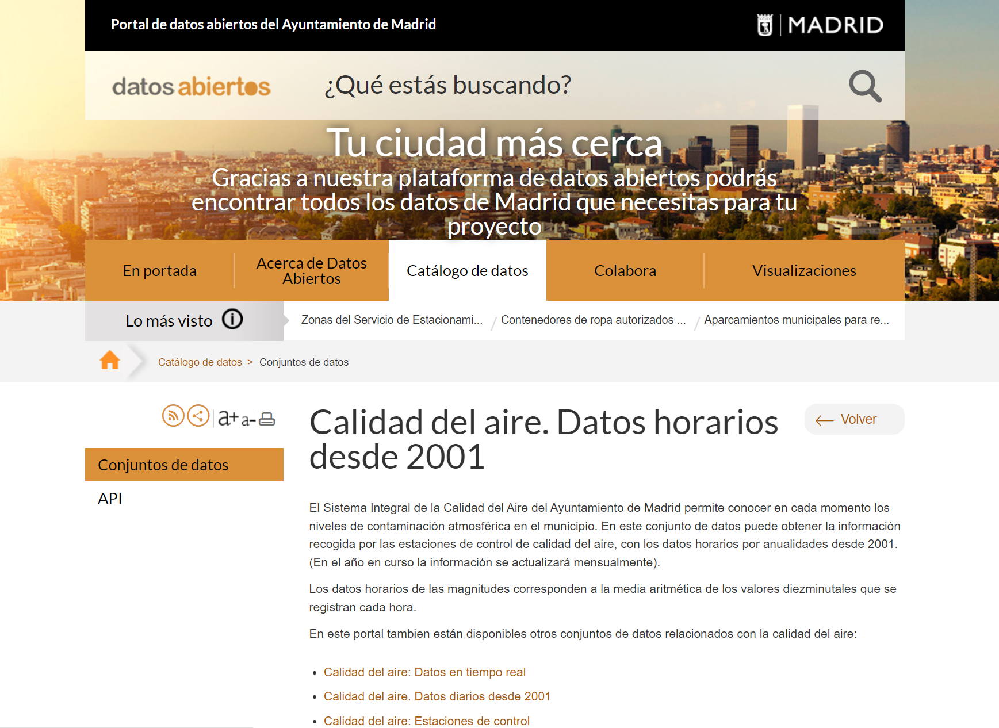
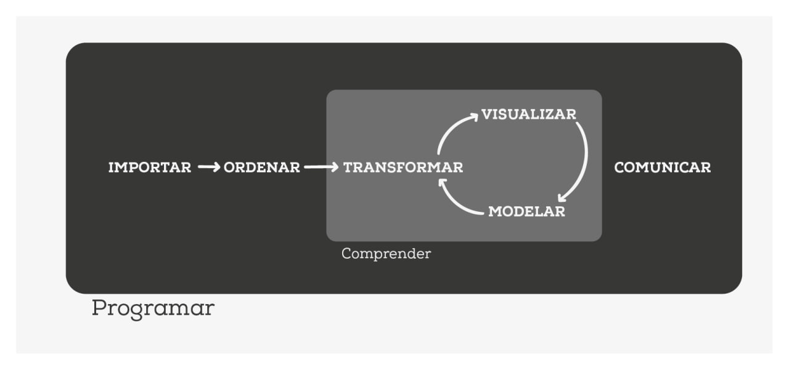
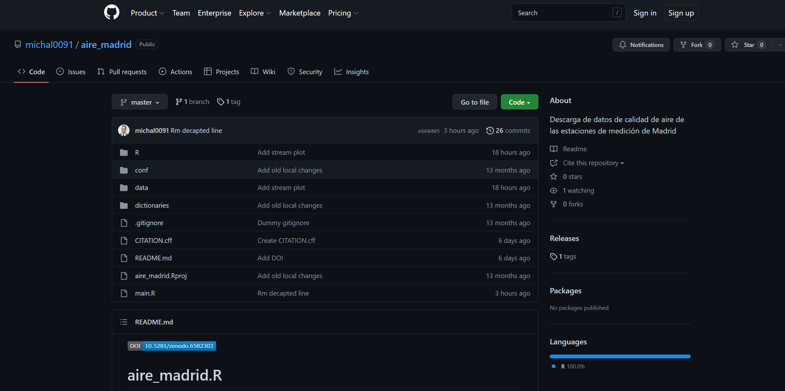

1 Introducción: las bases de un análisis de datos con R
1.1 ¿Qué vas a apernder?
Los conceptos básicos para llevar a cabo un análisis en ciencia de datos.
Un overview de las herramientas más importantes del software estadístico R y su potencial no solo para el análisis de datos.
Una de las metodologías más utilizada en ciencia de datos: la metodología Cross Industry Standard Process for Data Mining (CRISP-DM por sus siglas en inglés).
Cómo desarrollar un caso de uso en ciencia de datos aplicando la metodologías CRISP-DM a un problema actual de importante repercusión económica, sanitaria y social, el control de la calidad del aire.
1.2 ¿Qué no vas a aprender?
Programación en R
Escritura en LaTeX.
Contenidos teóricos de estadística y ciencia de datos.
1.3 ¿Qué es la ciencia de datos?
La ciencia de datos es una disciplina emergente que ha sido etiquetada como la profesión más sexy del siglo XXI (Davenport and Patil 2012). Mediante la combinación de modelos matemáticos y estadísticos, la programación computacional y el conocimiento del negocio o área de aplicación (véase Figure 1.1), la ciencia de datos obtiene el máximo valor de los datos para apoyar los procesos de toma de decisiones. Es decir, transforma los datos en información y la información en conocimiento.
1.4 ¿Cuáles son las herramientas básicas de R para ciencia de datos?
R es una caja de herramientas en el sentido más amplio (tal y com ilustra la Figure 1.2), pues permite llevar a cabo muchas aplicaciones y muy diferentes. Entre ellas, para hacer una idea al lector, con R es posible: sumar o restar, ejecutar modelos ya programados, desarrollar funciones nuevas, dibujar datos y resultados de forma estática y/o interactiva, crear informes y fomentar la reproducibilidad, diseñar y publicar blogs, páginas webs, dashboards, cuadros de mando, etc…
R tiene tres grandes pilares que son:
Rstudio: un entorno de desarrollo integrado (IDE) para R (y Python) dedicado a la computación estadística y gráficos. Incluye (Rstudio):
una consola,
un editor sintaxis en color que apoya la ejecución de código,
un entrono para las variables y
un conjunto de utilidades.
Tidyverse: una colección de paquetes coherentes, que comparten gramática, filosofía y estructura y están diseñados para realizar juntos como una canalización completa (pipeline). Todos se basan en la idea de tidy data propuesta por Hadley Wickham
- y pueden instalarse con un único comando en R:
install.packages("tidyverse")Los paquetes que forman parte del tidyverse son:
readr: importación de datos.dplyr: manipulación de datos.tidyr: ordenación de datos.ggplot2visualización de datos.purrr: programación.tibble: paratibbles, un nuevo formato dedata frames.stringr: para caracteres.forcats: para factores.
- Quarto/Rmarkdown: un marco de escritura para ciencia de datos, que combina código, resultados y comentarios. Los documentos de Quarto (*.qmd) y R Markdown (*.Rmd) son completamente reproducibles y soportan docenas de formatos de salida tales como PDFs, archivos de Word, presentaciones, artículos científicos,… Materiral de recomendable lectura R Markdown Cookbook, Rmarkdown y el nuevo formato multiplataforma integrado de Quarto
Note
Libro de referencia obligatoria: R for Data Science (en español)
1.5 Importancia de una metodología en ciencia de datos
La metodología en la ciencia de datos proporciona un camino para encontrar soluciones a un problema específico. Este es un proceso cíclico que sufre un comportamiento crítico y que guía a los analistas de negocios y científicos de datos a actuar en consecuencia.
CRISP-DM es un modelo estándar ampliamente utilizado en la minería de datos que proporciona un enfoque estructurado para llevar a cabo proyectos de análisis de datos (Wirth and Hipp (2000)). Este modelo se compone de seis fases interconectadas, que abarcan desde la comprensión del negocio hasta la implementación de los resultados del análisis. Las fases de CRISP-DM son:
Entendimiento del negocio.
Comprensión de los datos.
Preparación de los datos.
Modelado.
Evaluación.
Despliegue.

1.6 Caso de estudio: la calidad del aire en la ciudad de Madrid
La contaminación del aire exterior es uno de los principales problemas que afectan a la salud humana en las zonas urbanas de todo el mundo (Sanchis-Marco, Montero, and Fernandez-Aviles (2022)). Aunque las emisiones de la mayoría de los contaminantes del aire han disminuido sustancialmente en las últimas décadas, sus concentraciones aún superan los límites legales en la mayoría de los países, lo que indica que el control de la contaminación del aire sigue siendo un desafío para las sociedades modernas. Cada año, más de 4,2 millones de personas sufren una muerte prematura a causa de la contaminación del aire exterior (OMS, 2016). Los principales culpables son el ozono (O3), el dióxido de nitrógeno (NOx) y, sobre todo, las partículas finas o material particulado (PM) con un diámetro de 10 micrómetros o menos (PM10).
Por otra parte, Madrid es la tercera ciudad más poblada de la Unión Europea después de Londres y Berlín y cuenta con una gran área metropolitana periférica con más de cinco millones de habitantes. Su potente actividad económica, incluso en tiempos de pandemia de la Covid-19, se traduce en niveles de PM10 y NO2 superiores a los deseados a causa del transporte —en concreto, del tráfico rodado— y de la actividad industrial, que son las principales fuentes de emisión de PM10 (véase Montero and Fernández-Avilés (2018) y Montero, Fernández-Avilés, and Laureti (2021)).
En este contexto, el análisis de datos desempeña un papel crucial en la comprensión de la contaminación del aire y sus efectos en la salud humana y el medio ambiente. La disponibilidad de datos geoespaciales permite identificar patrones espaciales, detectar áreas de alta contaminación y evaluar el impacto de las emisiones en diferentes regiones. Resulta muy importante la fácil accesibilidad de los datos para la democratización de la información. Un ejemplo de ello es la página de Datos abiertos del Gobierno de España. Gracias a los datos públicos y el análisis adecuado se facilita la toma de decisiones informadas para abordar y mitigar los problemas de contaminación del aire.
La mejor forma para comprender y entender nuevos desarrollos es viendo su utilidad a través de un caso de uso, y en este manual se ha escogido un tema tan importante como es la contaminación del aire en la ciudad de Madrid. Ello quedó de manifiesto los días 14-16 de marzo de 2022 cuando una gran calima cubrió no sólo a Madrid (Figure 1.3) sino a España entera tiñiendo el país de polvo rojo.
Además, el Ayuntamiento de Madrid dispone datos abiertos proporcionados a traves delPortal de datos abiertos del Ayuntamiento de Madrid que permiten su análisis sin coste alguno.
Concretamente, a través del Sistema Integral de la Calidad del Aire del Ayuntamiento de Madrid (véase Figure 1.4), se pueden descargar los datos de los contaminantes registrados en las estaciones de monitoreo de la ciudad desde 2001 en distintos formatos.

Todo hace que quede más que justificado el interés del caso de estudio que se presenta.
1.6.1 Los datos
De acuerdo con Wickham and Grolemund (2016), el cual es considerada una referencia clave en el la ciencia de datos (Data Science with R), las herramientas necesarias para un proyecto típico de ciencia de datos sigue el siguiente esquema: importar, ordenar, transformar, visualizar, modelar y comunicar (véase Figure 1.5)

Tip
Partir con la ingesta y orden de los datos no sería optimo para llevar a cabo el objetivo de este manual, pues el 80% del tiempo es un proceso rutinario y aburrido y el 20% restante es extraño y frustrante.
En el caso que nos ocupa, se recurre al repositorio de Github michal0091/aire_madrid de Kinel (2022a, 2022b) que trata los datos brutos de calidad del aire del Ayuntamiento de Madrid, los organiza y los codifica, facilitando así su uso (Figure 1.6). La salida del conjunto de datos dt_daily_mean_2011.RDS que aquí se proporciona será la entrada para el análisis que se presenta.
(TODO) descripción breve de lo que contienen estas carpetas, datos procesasdos, sin procear, diccionarios.

Davenport, Thomas H, and DJ Patil. 2012. “Data Scientist.” Harvard Business Review 90 (5): 70–76.
Montero, José-Marı́a, and Gema Fernández-Avilés. 2018. “Functional Kriging Prediction of Atmospheric Particulate Matter Concentrations in Madrid, Spain: Is the New Monitoring System Masking Potential Public Health Problems?” Journal of Cleaner Production 175: 283–93.
Montero, José-Marı́a, Gema Fernández-Avilés, and Tiziana Laureti. 2021. “A Local Spatial STIRPAT Model for Outdoor NOx Concentrations in the Community of Madrid, Spain.” Mathematics 9 (6): 677.
Sanchis-Marco, Lidia, José-Marı́a Montero, and Gema Fernandez-Aviles. 2022. “An Extended CAViaR Model for Early-Warning of Exceedances of the Air Pollution Standards. The Case of PM10 in the City of Madrid.” Atmospheric Pollution Research 13 (4): 101355.
Wickham, Hadley, and Garrett Grolemund. 2016. R for Data Science: Import, Tidy, Transform, Visualize, and Model Data. " O’Reilly Media, Inc.".
Wirth, Rüdiger, and Jochen Hipp. 2000. “CRISP-DM: Towards a Standard Process Model for Data Mining.” In Proceedings of the 4th International Conference on the Practical Applications of Knowledge Discovery and Data Mining, 1:29–39. Manchester.